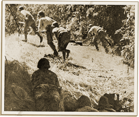

|
j
a v a s c r i p t |
April 3, 1942, Good Friday
Manolo returned my "magic eye" GE set today after replacing only one tube. I bought six spare ones anyway, just in case I can't get them later. The set now works like a charm. I was able to get VoF on shortwave clear as a bell by tuning out KZRH on the same wavelength.

Japanese advance on Mt. Samat
VoF didn't have much to say, which was ominous enough. KGEI and London reported that a huge Japanese force penetrated our first line of defense and was stopped by a counterattack involving hand to hand fighting. The USAFFE is now mopping them up. It's simply suicide to go into Bataan headlong by land. The Japanese will need to use the seas on both sides, preferably at night, supported by air and sea power. |
|
|
|
|